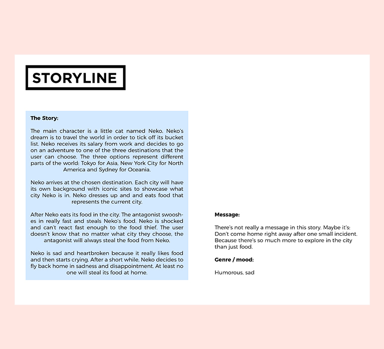
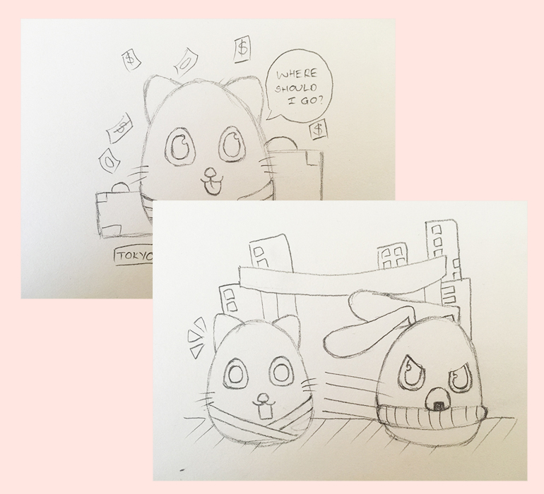
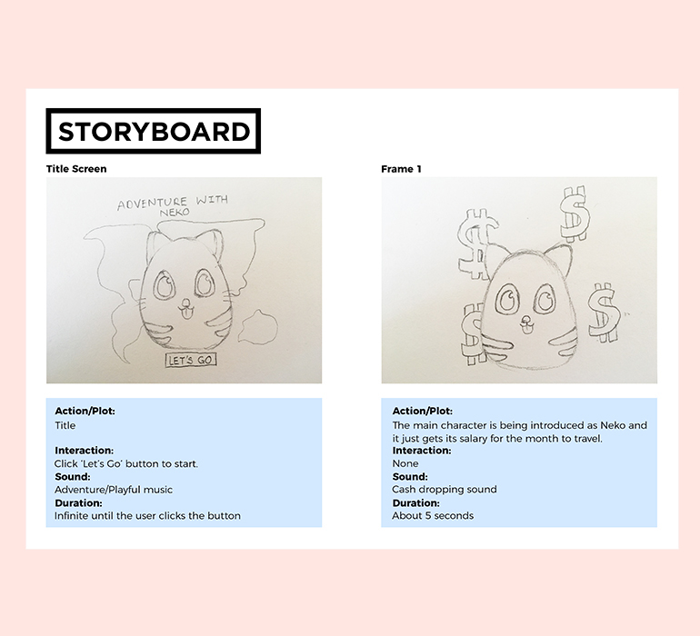
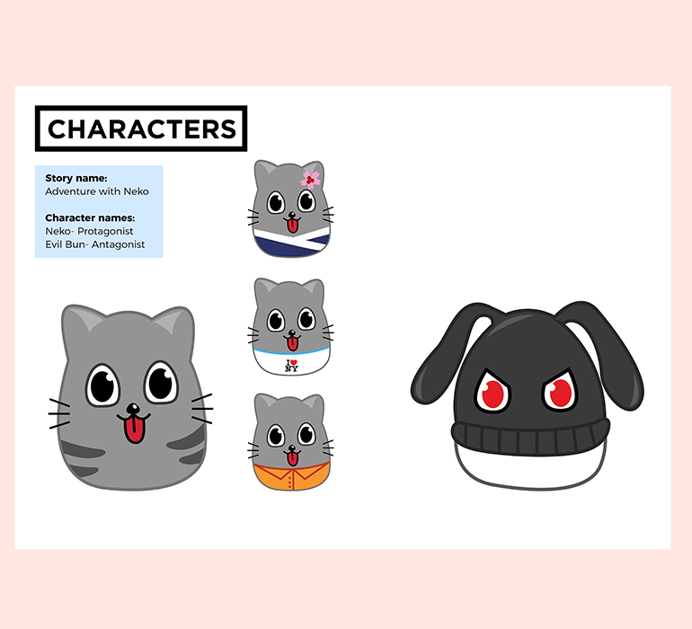
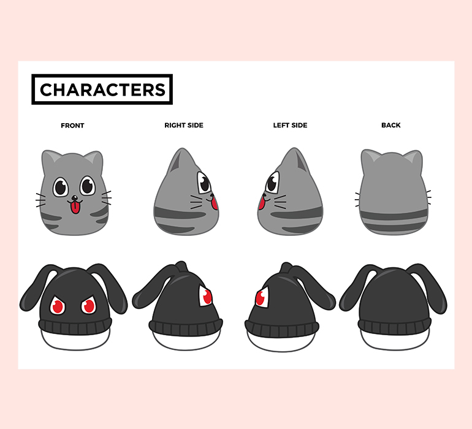
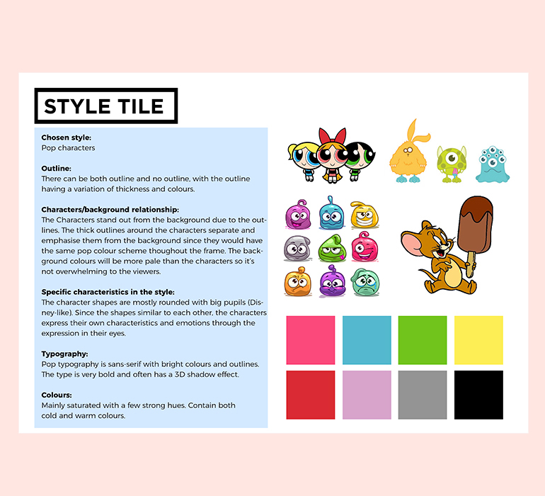

Animation
SKILLS
Illustrator, CSS, HTML
DESCRIPTION
I was introduced to animation in Illustrator, this was new to me and I
really enjoyed it. I learned how to make frame by frame animation plus
how to achieve a good frame rate. This hugely expanded my skillset in
Illustator.
This project was to write a short story with character development and
plot and to create a sprite animation based on it.
LINK
http://tiffvoli.com/sprite-animation/
http://tiffvoli.com/02-02-01-Animation.pdf
-

Storyline
First thing to do was to create a storyline for my animation. I
decided to do a travl animation because it would allow to play
with designs from different countries.
-

Sketches
After that, I sketched out all my characters and backgrounds
depending on my storyline. This gave me a visualisation of my
animation before actually making it.
-

Storyboard
I was introduced to making a storyboard to aid the process. The
storyboard included each screen with interaction, sound and
duration so I would know what to add in later on.
-

Character Designs
I designed all the characters based on my skecthes in
Illustrator to create vector graphics.I chose to make the
characters gray and black because I intended to make the
backgrounds colourful therefore it wouldn't be too overwhelming.
-

Stances
For each character, I also created 4 different views to make the
characters more lively and interactive.
-

Style Tile
I chose pop characters for my style because they normally have a
outline around the characters so they would stand out more from
the background. I put in a few pop colours while also having a
dark tone to create a nice contrast and improve visability.
-
Sprite
I designed this sprite animation in Illustrator by creating
frame by frame. I ran into a small problem with coding but I
learned out to do it on a later project
(interactive poster).
-
Background Designs
I designed all of the background using Illustrator and took
inspiration from Tokyo, New York and Sydney. I wanted to make
the backgrounds very colourful to capture its respective city's
beauty. I didn't use any dark colours so that the main
characters could stand out from the backdrops.